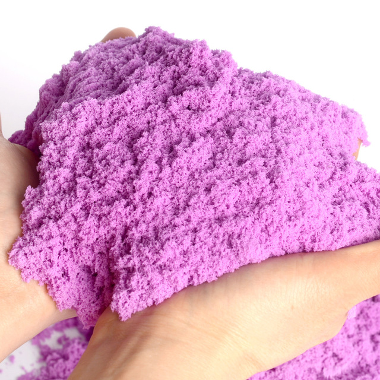
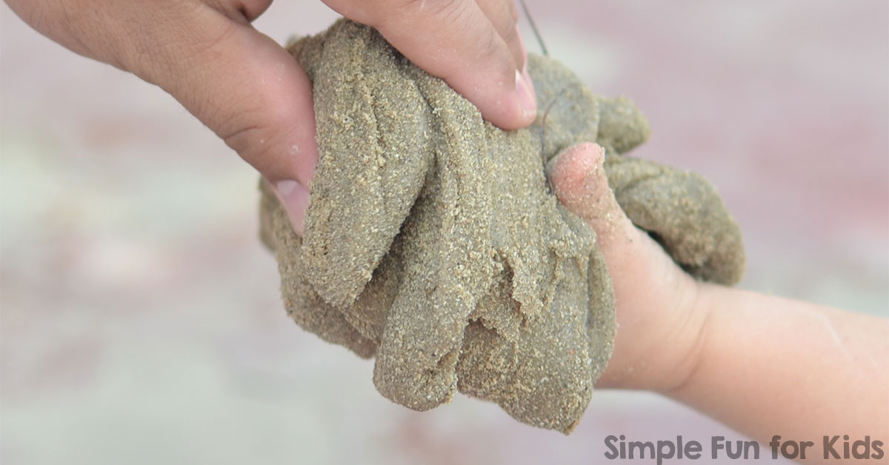

Sand Slime
If you are planning a trip to the beach or checking out an ocean themed science unit this year, making slime is always an awesome chemistry activity to include! We have quite a few fun beach and ocean themed science and sensory ideas to check out this summer.
Ingredients

- Liquid Starch
- water
- Beach Sand,Play Sand, or Craft Sand
- Shells and Pail {optional}
Slime Recipe
We used our liquid starch slime recipe for this activity, but you can also try the saline slime recipe too! The sand is added during the mix-in stage that you will see below. Scroll down to see photos and read the exact recipe.
Procedure
- Add 1/2 cup of clear washable PVA school glue to a bowl.
- Add to that a 1/2 cup of water and mix well
- Add several tablespoons of your beach or play sand and stir into glue/water mixture.
- Add 1/4 cup of liquid starch and stir.
- Add shells, a small pail, and a shovel for play!
ENJOY!

Slime will begin to form immediately. You should keep stirring until slime pulls away nicely from sides and bottom of bowl. You can then begin kneading with your hands until desired consistency is achieved!
Usually we use a reusable container either plastic or glass. If you keep your slime clean it will last for several weeks. And…if you forget to store your slime in a container, it does actually last a few days uncovered.
Sand Slime
